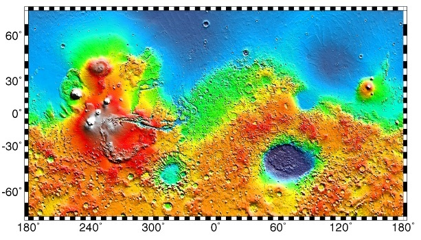

 A Mars landing is a landing of a spacecraft on the surface of Mars. Of multiple attempts Mars landings by robotic, unmanned spacecraft, seven were successful.[which?] There have also been studies for a possible manned mission to Mars, including a landing, but none have been attempted
In 1969, the Soviet Union prepared a 5-ton orbiter called M-69. Two copies of the probe, Mars 1969A and Mars 1969B, were lost in launch related complications caused by problems with the newly developed Proton rockets.
In 1971, shortly after the Cosmos 419 (Mars 1971C), that intended to be a first Martian orbiter, was lost in the fourth stage of the launch due to issues concerning the failure in the separation of Cosmos' payload from the launch vehicle, the Soviet Union successfully sent probes Mars 2 and Mars 3, as part of the Mars probe program M-71. The Mars 2 and 3 probes each carried a lander, both of which failed upon landing. They were the first human artifacts to touch down on Mars. Mars 2 lander impacted on Mars only, while Mars 3 was the first Martian lander and was able to transmit from the Martian surface during the first 20 seconds, the first data and a portion of the first picture. These spaceprobes also contained the first Mars mini-rovers, although they were broken on landing.
The Mars 2 and 3 orbiters sent back a large volume of data covering the period from December 1971 to March 1972, although transmissions continued through to August. By 22 August 1972, after sending back data and a total of 60 pictures, Mars 2 and 3 concluded their missions. The images and data enabled creation of surface relief maps, and gave information on the Martian gravity and magnetosphere.
In 1973, the Soviet Union sent four more probes to Mars: the Mars 4 and Mars 5 orbiters and the Mars 6 and Mars 7 fly-by/lander combinations. All missions except Mars 7 sent back data, with Mars 5 being most successful. Mars 5 transmitted 60 images before a loss of pressurization in the transmitter housing, ended the mission. Mars 6 lander transmitted data during descent, but failed upon impact. Mars 4 flew by the planet at a range of 2200 km returning one swath of pictures and radio occultation data, which constituted the first detection of the nightside ionosphere on Mars. Mars 7 probe separated prematurely from the carrying vehicle due to a problem in the operation of one of the onboard systems (attitude control or retro-rockets) and missed the planet by 1300 km.
Years earlier, in 1970 Soviet Union began the design of Mars 4NM and Mars 5NM missions with superheavy unmanned Martian spacecraft. First was Marsokhod with planned date of start in 1973 and second was Mars sample return mission planned to 1975. Both spacecraft intended to launch on N1 superrocket. But this rocket never flew successfully and Mars 4NM and Mars 5NM projects were cancelled.